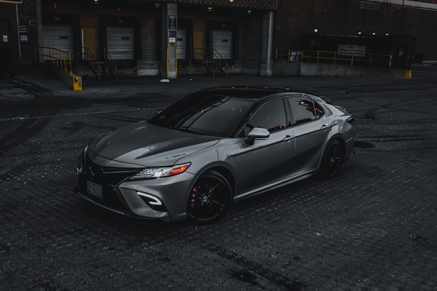

2026 Toyota Camry
Reliability you trust. Comfort you feel. Performance built for the modern road.
Explore Now
Overview
The Toyota Camry has long been recognized as one of the world's best-selling mid-size sedans, earning the trust of drivers since . Now in its ninth generation, the 2026 Camry brings together bold exterior styling, a refined interior, and advanced hybrid technology. It continues to be a favorite among drivers who appreciate reliability, fuel efficiency, and everyday practicality. The hybrid model combines a 2.5-litre four-cylinder engine with an electric motor, offering impressive fuel economy while delivering smooth performance on the road.
View FeaturesSpecifications
Compare the petrol and hybrid variants side by side.
| Specification | Petrol (2.5L) | Hybrid (2.5L) |
|---|---|---|
| Engine | 2.5L 4-cylinder DOHC | 2.5L 4-cylinder + Electric Motor |
| Horsepower | 203 hp | 208 hp (combined) |
| Torque | 184 lb-ft | 163 lb-ft |
| Transmission | 8-speed automatic | eCVT |
| Fuel Economy (city/hwy) | 28 / 39 mpg | 51 / 53 mpg |
| Drivetrain | FWD / AWD | FWD / AWD |
| 0–60 mph | 7.4 seconds | 7.0 seconds |
| Seating Capacity | 5 | 5 |
| Cargo Volume | 15.1 cu ft | 15.1 cu ft |
| Starting MSRP | $27,415 | $30,145 |
User Reviews
Real experiences from Toyota Camry owners around the world.
I've owned my Camry Hybrid for two years and the fuel savings alone have paid for the price difference. Incredibly smooth and quiet on the highway.
— Omar Al-Rashid
The interior quality surprised me — it feels premium without the premium price tag. Toyota Safety Sense gives real peace of mind on long drives.
— Khalid Al-Mansouri
Reliable as ever. 80,000 miles and not a single major issue. The resale value is also fantastic compared to competitors.
— Layla Al-Hassan